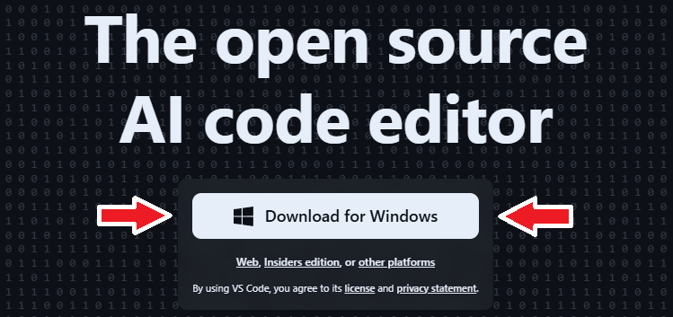
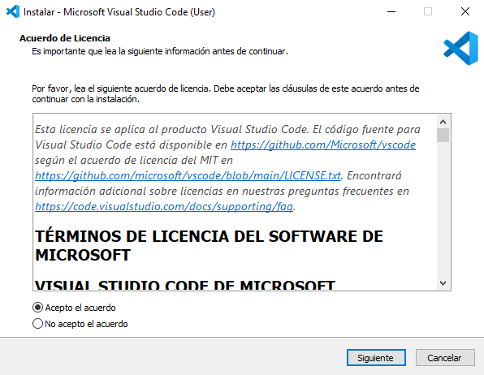
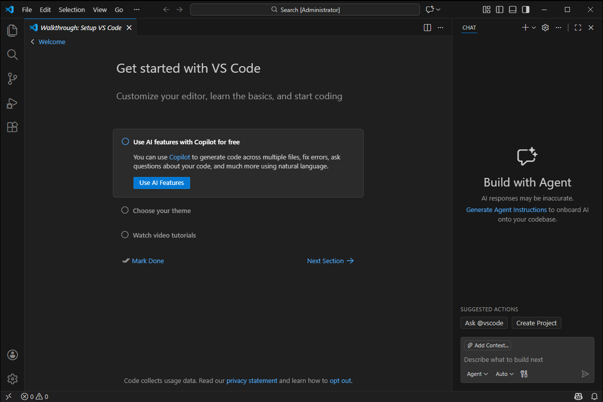

¡Aprendé a instalar Visual Studio Code en Windows!
Visual Studio Code (VS Code) es un editor de código muy usado para programar y crear sitios web.
Es un programa rápido, liviano y funciona muy bien tanto para principiantes como para personas
que ya saben programar.

Este software se destaca por su facilidad de uso y por la cantidad de herramientas que ofrece. Es
muy utilizado para desarrollo web y programación en general, ya que permite trabajar con
distintos lenguajes de forma cómoda, ordenada y eficiente.
Pasos para instalar Visual Studio Code en Windows
Paso 1: Descargar el programa
Lo primero que debemos hacer es descargar el instalador de Visual Studio Code desde su sitio web oficial.

Paso 2: Ejecutar el asistente de instalación
Una vez que hayamos descargado el archivo, hacemos doble clic sobre el ejecutable para iniciar el
asistente de instalación.
Al abrirlo, veremos una ventana parecida a esta:

A continuación, seguimos los pasos que nos va indicando el asistente. Durante la instalación,
podemos dejar las opciones por defecto, ya que son adecuadas para la mayoría de los usuarios.
En poco tiempo, el programa se instalará y quedará listo para usarse.
Paso 3: Ejecutar el programa
Cuando finalice la instalación, abrimos Visual Studio Code desde el escritorio o el menú Inicio.
Al ejecutarlo, nos va a aparecer una ventana como la siguiente:

Desde este punto, ya podremos hacer uso de este gran programa y crear nuestros propios proyectos.
¿Es recomendable usar Visual Studio Code?
Sí, VS Code es muy conocido porque combina simplicidad y potencia. Funciona rápido, no consume muchos
recursos y nos permite agregar extensiones para mejorar la experiencia de trabajo.
Es una herramienta excelente para aprender a programar, a desarrollar proyectos y organizar el
código de manera clara y ordenada.